Base Planning
Here�s a little secret about base design: There isn�t one, it�s all up to you.
I cannot tell you exactly what to do here, because everyone will have specific preferences and want to defend certain points of their base depending on how important a specific structure is to you.
However, I can give you some tips on how to design a decent base defense and tell you some things to avoid.
We�ll start with the basics and work our way to more advanced strategies.
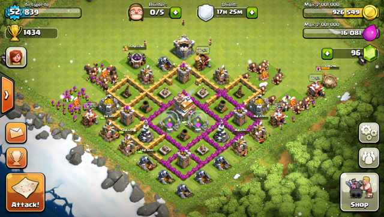
Basics of Base Planning
It�s a good idea to have your goal in mind before designing your base. There are 3 main types of bases:
1. Farming - This base typically focuses on protecting Resources.
2. Trophy-hunting - This base is focused on protecting the Town Hall and being as difficult to take down as possible.
3. Hybrid - This base is a mixture of the first two bases, with the goals of protecting both resources and Trophies.
Some other tips to keep in mind before we start:
- Start from the center. When you�re designing your base, remember that the center is the most important. That�s where you should place your most important buildings. The center of your base should, ideally, be the most difficult place in your entire village for your attacker to get to, because if they�re spawning directly into the center of your base, something is very wrong with your design.
- Don�t underestimate splash defenses. Defenses that do splash damage are important because they damage groups of attackers, not just one unit at a time. Mortars and Wizard Towers are awesome. Max them out if you can, especially because most players like to send in groups of goblins, archers, giants, barbarians and etc. Splash defenses should be placed in the center of your base. Just remember defenses like Mortars can�t attack at close range, so defend them well with walls and other defenses.
- Traps and walls � use them well. I�ll be talking about more advanced strategies later in another section, but for now keep in mind that you can use these two together against your enemies very effectively. Invest in spring traps, and use walls to make the enemy run right onto them. Design your base well � don�t just go for the traditional single border around everything when building your walls. Make a maze, segment your buildings, have multiple layers of defense.
- Sandwich your single-target defenses between your splash damage defenses and collectors. The outermost layer of your base is where you should place your collectors, and just in between those and the center of your base, you should place your single target defenses (unless you�re farming resources). They have high HPs compared to other buildings and can act as a buffer, so attackers don�t spawn right outside your walls.
With that�s said, let�s get started talking about base defense basics.
Walls are generally a good place to start.
As I mentioned, it�s a good idea to design the walls as a complete border around the outside, but don�t forget to build some inner walls as well and partition your structures, so that if the enemy makes it past the outer wall, you still have some defense inside. Don�t leave any gaps in your walls, or the enemy will just run right in.
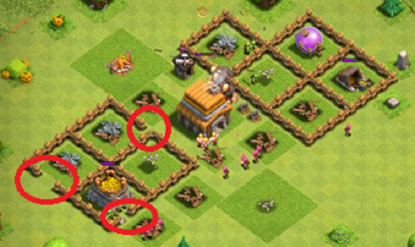
If you�re a new player, one thing you should know about base defense is that you need to keep all your defenses close together.
It�s probably a good idea to build your Mortar, Archer Tower and Cannons (and other defenses) to surround your Town Hall.
Keep your important structures (like Gold and Elixir Storages) inside your walls. You can also put them near your Town Hall and defenses.
If you have completed your Clan Castle, keep it nearby as well, because when others attack you, it will deploy Troops to defend against the attack.
You can design the walls to direct the enemy to your Traps as well, if you have any set up, or to go in a certain direction. This is called �funneling�.
Now, you can�t just rely on some walls to keep your village safe. People will have units and Traps to take care of those, like Wall Breakers. And don�t forget Archers can target defensive structures even if you put them inside your walls, so you need to have an answer to those, too.
One thing you can do is use buildings to prevent the enemy from being able to deploy their Troops inside your base. You may have noticed that when you move any building in the game, there�s a white border around the base, about one space big. This is to show you where your enemy can deploy their units. It�s best to avoid giving the enemy any open spawning areas inside your base.
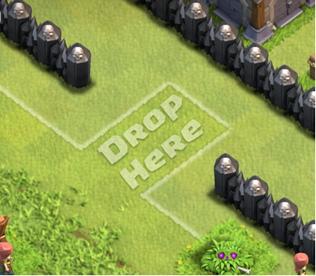
You can also use buildings to buy more time for your defensive structures to destroy enemy units. For example build some buildings around the outside of your walls so weaker units will target them first � while your defense structures shoot them down.
Try to keep in mind how units will target your structures when you design your walls. That way you can visualize the likely movements of enemy Troops and set your Traps and defenses accordingly.
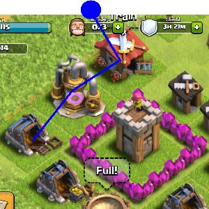
In this image, if an Archer is placed where the blue dot is, it will attack the buildings in the order shown. Use this information to your advantage when placing buildings to slow enemy units down.
NOTE: You can afford to leave Builder�s Huts, the Laboratory, Barracks, Army Camps and Spell Factory outside your walls � they�ll be rebuilt later with no penalties or loss of progress.
You can also choose to leave Mines and Collectors outside, as they have quite a lot of HP, but you might lose uncollected Resources. If you don�t play as often, keep them inside your walls and make sure they are at a high level.
Town Hall, defensive structures and Storages should be inside the walls, and heavily protected.
NOTE: When farming, you can leave your Town Hall outside your walls, and if you�re Trophy hunting, then bury it deep within your base and protect it at all costs. It depends on what your current goal is: rapid growth or achieving a high trophy ranking. The Town Hall takes up a lot of space, so if you just want to make sure nobody steals your hard-farmed Resources, then just leave it outside the walls. Even better, because once the Town Hall is destroyed you receive a free shield, protecting you from attack for a short period of time while you gather more Resources.
Overlap your defenses � have some other defensive structures to protect your towers/cannons, for example, to cover them while they�re being attacked. And don�t spread your defenses out over a wide area, since this leaves you vulnerable to a number of enemy units.
On the other hand, don�t stuff everything inside your walls either. Keep important buildings inside, like Storages and defenses. Don�t worry so much about losing the rest � they will be restored after the battle is over.
Don�t use debris or decorations to save on walls � you can�t use them to block the enemy from entering, since enemy units can walk right around them. It won�t be any different from leaving a gap in your walls.
How many walls you can build will depend on the level of your Town Hall. Here�s a cheat sheet:
| Town Hall Level | Walls |
| 1 | - |
| 2 | 25 |
| 3 | 50 |
| 4 | 75 |
| 5 | 100 |
| 6 | 125 |
| 7 | 175 |
| 8 | 225 |
| 9 | 250 |
| 10 | 250 |
Another thing to keep in mind is that a rectangular base design can actually be easier to destroy, so try to design a strategic maze of a base, with several layers of walls, so that the opponent won�t break through with just some Wall Breakers.
Walls should be upgraded to at least level 6, which is the minimum level where one Wall Breaker won�t be enough to destroy it immediately, regardless of the Walls Breaker�s level.
Those are pretty much the basics. Once you have these under your belt, you�ll be able to move on to bigger and better base defenses.
Base Layouts
Now we can start talking about base defense in more detail.
Firstly, let�s understand why people want to attack your base.
Reasons people usually attack other bases:
- To gain resources
- To increase the amount of Trophies they have
So if they see certain things on your base, they will attack you in order to achieve these goals. Therefore, the idea is for you to make your base less attractive to attackers, so that people won�t want to attack you.
This won�t completely prevent you from being attacked. But it can hopefully minimize the chances that someone would want to attack you instead of using the option to skip to another target.
People are more likely to attack your base if it looks like there�s a lot of loot, and even more so if that loot is easily accessible. If you don�t have much for others to steal, your base is probably safe.
Try separating your Mines and Collectors. If an enemy attacks hoping for a certain Resource, don�t make it easy for them to get it by putting everything in one place, or in a straight line. Make your resources difficult to get to with walls, wall sections, even double walls.
And upgrade your walls every chance you get, starting with the intersections (parts where one wall meets another).
NOTE: Don�t upgrade every other wall. �Spotted� walls are vulnerable, and Wall Breakers will target the weakest points in the wall, providing easy access to the base.
In fact, upgrading can help in more ways than one, because you�ll be spending your resources, leaving the enemy with even less for them to steal. (Uncollected Resources are easier to steal, right out of your Mine or Collector.) Spend your Resources on building your army (you can also queue troops since some take a long time to train), buy spells, do research, clear obstacles, build more defenses� you can even splurge on decorations if you have extra Resources to do so.
TIP: Want to protect your Elixir? Spend Elixir on high cost Troops that take a long time to Train, like Wall Breakers, and queue them till your Barracks is full. You can later cancel training of queued units without cost (and your Elixir will be returned unspent). In the meantime, your Elixir will be safely �banked� in your units being trained, and enemy attackers can�t get to it.
Also, by upgrading your walls, you make your base look tougher. Make it look difficult to break into, so that hopefully your opponent will decide that you aren�t worth the effort and potential loss, and look elsewhere for what they want.
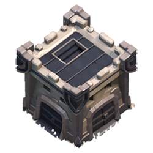
Clan Castle
Clan Castle troops will be deployed to defend against an attack (once the enemy is within range). Clan Castle troops can jump over walls, and they will target the unit that activated them first even if other units are nearer to them.
You�ll want to use these reinforcements to help you cut down your enemies one by one (because if 20 archers are deployed, all of them will target the unit that activated them before moving on to the next target). Even if the unit being attacked has higher HP, being attacked 20 to 1 results in him dying more quickly than if he were being attacked by one unit at a time.
NOTE: Don�t use your unrepaired Clan Castle as part of a wall. Enemies can walk around it. If you�re not using it, place it outside to slow down enemies.
Funneling
Funneling, as you�ve probably figured out from reading previous sections, means to direct enemy units to go where you want them to go (so that you can kill them more easily).
Funneling helps you get the most out of those defenses that deal splash damage (ex: mortars), towers and traps.
Hopefully, if you�re doing it right, it will help you direct them away from the defenses and buildings you want to protect as well.
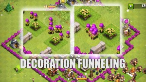
Spawn forcing
There is a strategy used by players known as �spawn forcing�, where you force your enemy to only be able to spawn in a certain place (further away from your defensive buildings, or further from your base).
This involves strategic arrangement and placement of your outer buildings, decorations, obstacles and extra walls.
Most players who try to use this method prefer to use buildings to slow down their opponents once they reach the walls and are in range of archer towers and the like. That�s fine.
Spawn forcing is also done with the intention of wasting Wall Breakers before they reach your walls, because they can usually detonate before the archer towers can kill them.
Other tips
- Don�t upgrade all your defensive structures at once. They will be inactive while they are being upgraded, so you will be vulnerable when you get attacked. (You can place buildings that are being upgraded outside your walls in the hopes that they distract the Giants. They won�t do much else while being upgraded anyway, so you can use them to buy time for your other defenses to kill things.)
- When upgrading your walls, upgrade them in the order that they will be attacked. Upgrade your outer walls first, and those that are protecting your defenses because those are the ones that Giants and similar units will go after first. Upgrade from outside first, and work your way to the inner walls.
- Get Traps and place them in strategic places. Don�t place traps in a predictable pattern, but don�t place them randomly either. Try and funnel the enemy towards them and hopefully pick them off quickly before they do too much damage. Just remember that Goblins can trigger Traps without being hurt (and so can P.E.K.K.As). Also remember that Spring Traps can damage Troops donated by your Clan members, so watch where you place those.
- Try to request Troops from Clan members, if you�re part of a Clan. Try to get enough to keep your Clan Castle full.
- 100% base destruction will let an enemy player earn three stars. Some players try to stop this from happening by hiding buildings in a corner of their map (so enemy players can�t destroy the base 100% before their time is up).
- Enemies can�t deploy on decorations or natural obstacles. Use them to fill holes in your base, or to keep the enemy away from your defenses.
- Always check for holes or weak points, in case you decide to redesign your base one day and forget to refill that hole in the wall from moving stuff around. You don�t want to come back and find out that someone took advantage of a new spawn hole where there wasn�t one before.
- If your base can easily be 50% destroyed, you become a target for those wanting to 1-star opponents. Don�t spread out your buildings too much outside your walls.
- Consider the range of your towers and turrets. The main objective of placing buildings outside your walls is to slow down your opponents, not to prevent them from deploying troops there.
- Visit other players and learn from seeing how they have designed their base. Don�t be shy to copy their ideas, or modify them as you like. If you want to learn about trap placement, you can visit your allies and see where they have placed their traps.
- Enemies can spawn on the edge of the map. Don�t use them to skimp on wall building. Always complete your walls.
It�ll take time, but after a few battles and trying out strategies you�ll probably get the hang of it. The more you attack, the better you�ll become at strategizing. The game allows you to replay battles after you get attacked, so watch them and learn from how others attack you. Take note of weaknesses in your defenses and work to fix them.
In the end, you want to have a base that can defend against enemies at least 80% of the time. Finding a design that works for you gives you a sense of achievement and accomplishment � especially as you watch others attack you and lose to your epic defenses.
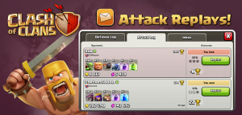
Base Layouts Per Town Hall Level
Let�s get a little more in-depth and discuss basic optimal layouts for each Town Hall level.
I�ve already covered the basics and advanced base design, so we should know by now that bases can have two kinds of layouts: symmetrical, and asymmetrical.
Wall layouts
Single border - Walls built in one line around your entire base. Vulnerable to Wall Breakers and Archers. Generally easy to destroy.
Double layer - Two layers of single walls. Prevents Archers from targeting structures just inside your walls. (Archers have a 3 square range.) Still vulnerable to Wall Breakers (as of recent update, they do more splash damage).
Multi-layers - Multiple layers of walls.
Inner and outer border - An inner wall to protect your important structures and an outer wall to fully or partially protect the inner wall and the structures within it.
Maze - Walls that are segmented or create compartments that protect buildings/defenses. Slows down Wall Breakers because if one part is breached, they still need to break through the other compartments.
Bunker-style - Multi-layered walls inside, with most buildings and Resources outside the walls.
As for optimal base layouts, here are some screenshots of other player�s bases that you can study.
Level 5
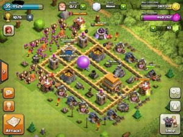
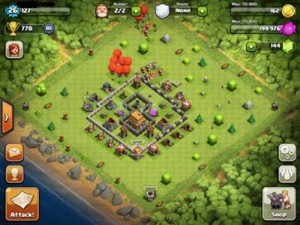
Level 6
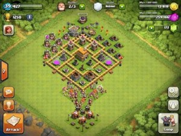
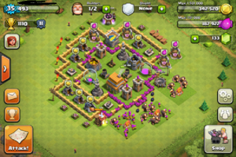
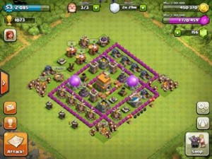
Level 7
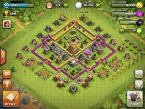
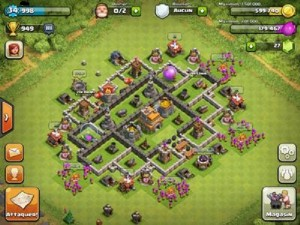
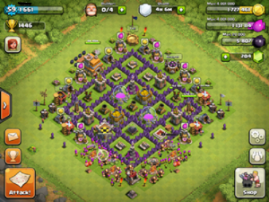
Level 8
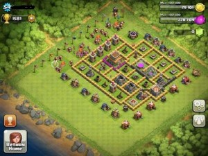
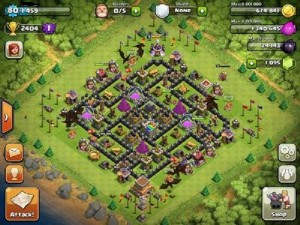
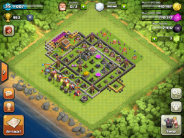
Level 9
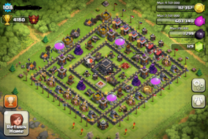
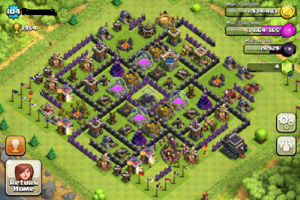
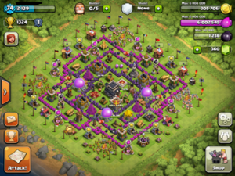
Level 10
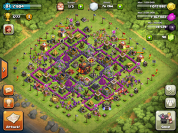
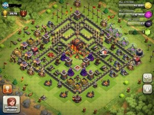
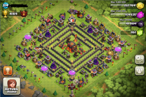